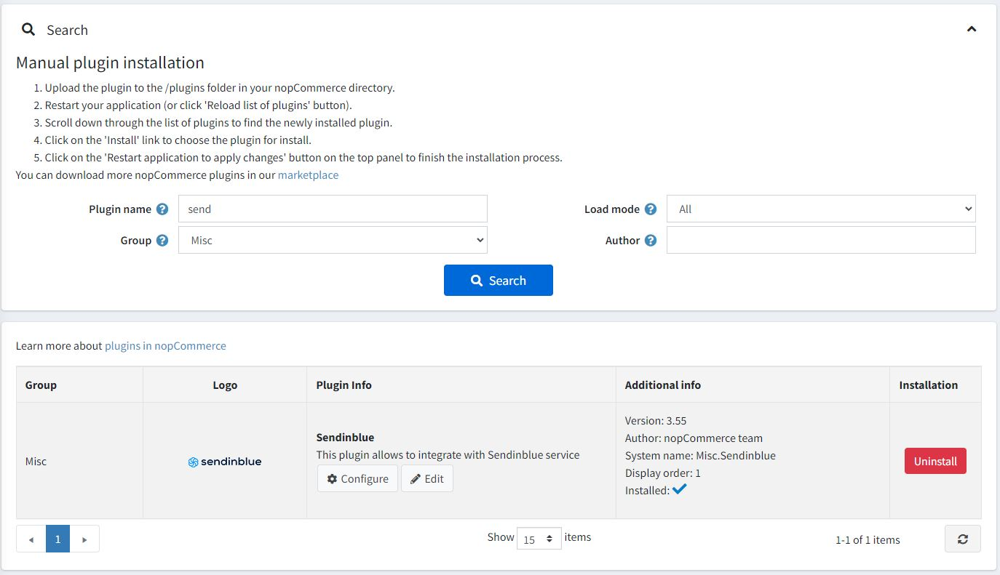
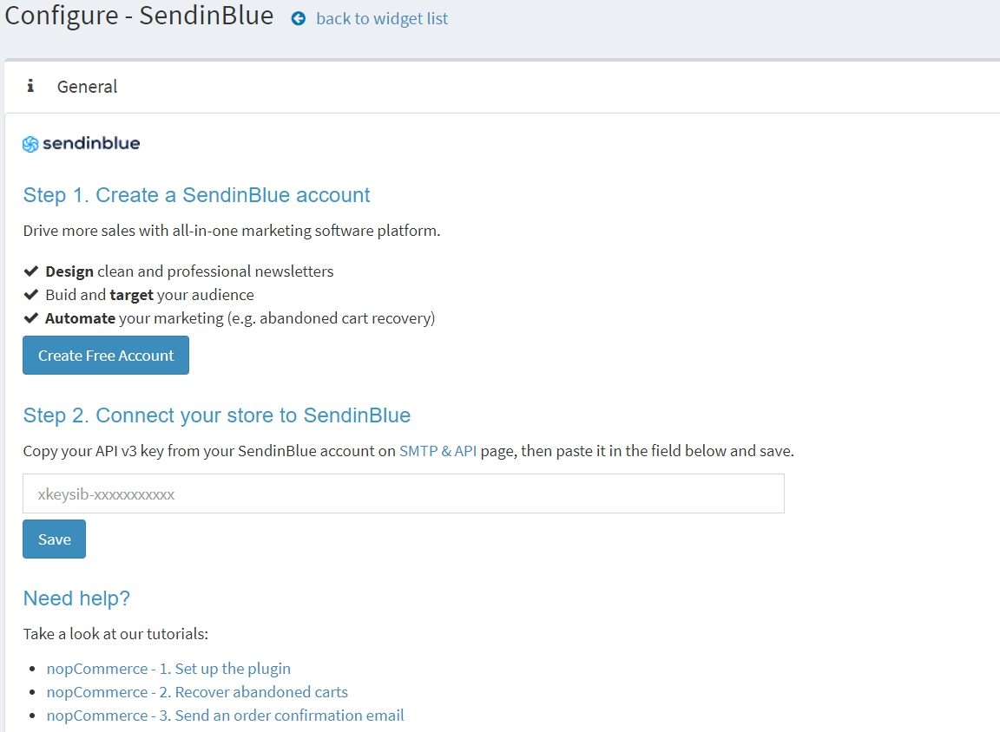
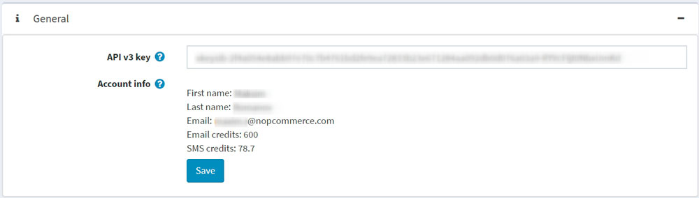
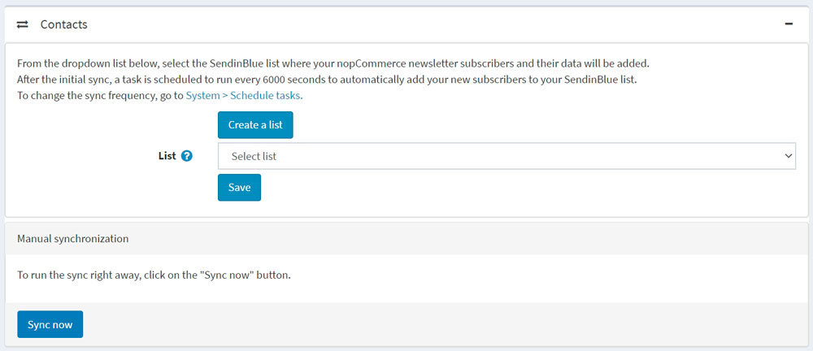
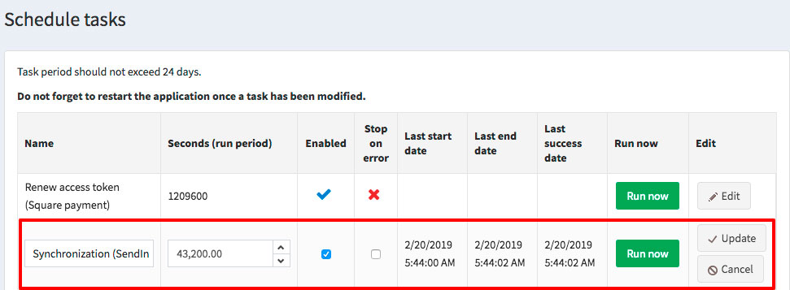
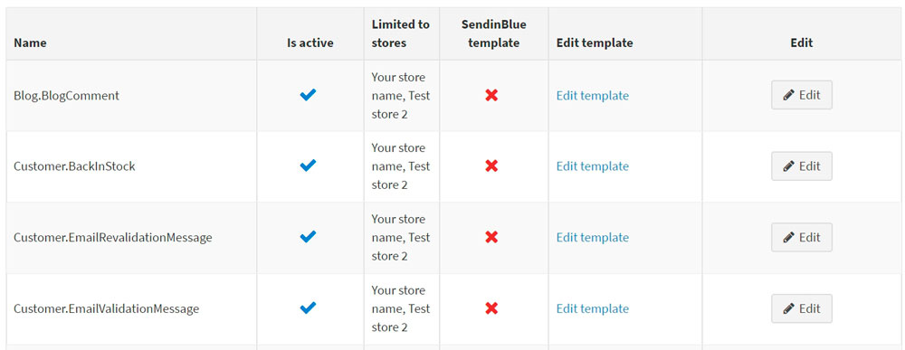
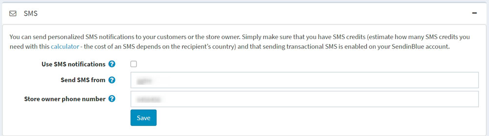
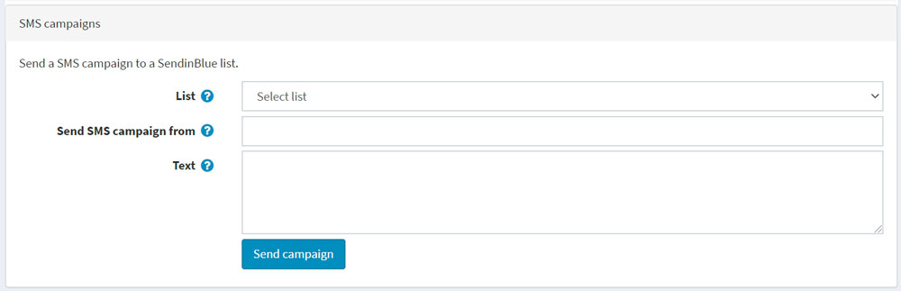
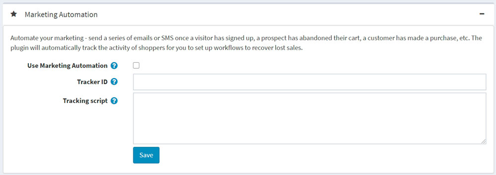
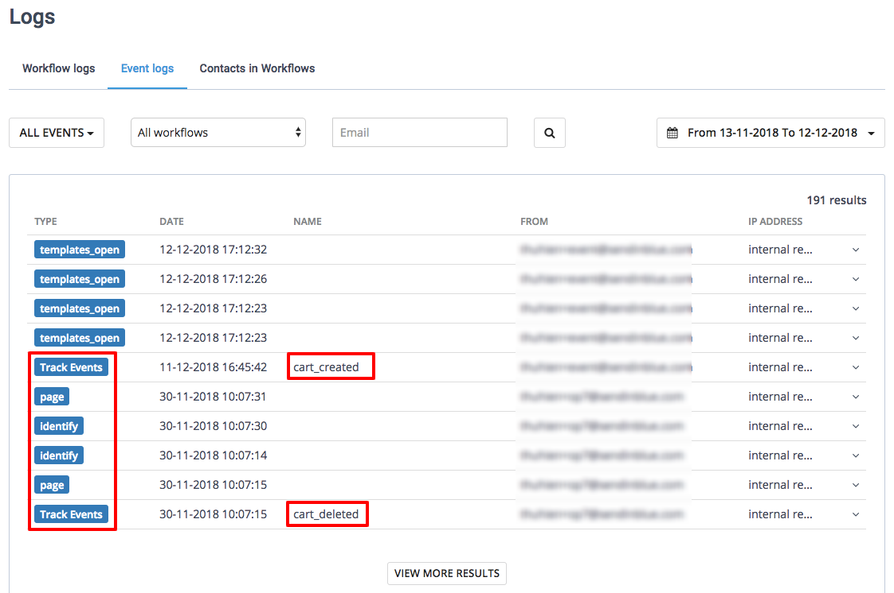

Set up Sendinblue plugin
This section describes how to integrate Sendinblue into your store.
Install and enable the plugin
The Sendinblue plugin is an out-of-the-box nopCommerce plugin. You can find it here: Configuration → Local plugins. To find the plugin faster, use the Group field in the search panel to filter the plugins by Misc type: 
Install the plugin using the Install button if it is uninstalled. Then enable it by clicking the Edit button. You will see the Edit plugin details window in this case. Mark the plugin as enabled using the Is enabled checkbox and click the Save button.
How to configure the plugin
Click the Configure button. You will see the Configure - Sendinblue window: 
You will need to create a free Sendinblue account using this link.
Enter your API v3 key from your Sendinblue account on the SMTP & API page.
Click the Save button.
Once you have done this, you should be able to see your account details. 
Go to the Contacts panel to synchronize your nopCommerce customers with your Sendinblue account. 
- To create a new Sendinblue list, click the Create a list button to be redirected to your Sendinblue account.
- From the dropdown list, select the list where your nopCommerce subscribers and their contact data will be added. Click the Save button.
What data is synced?
The following form fields are synced as contact attributes:
- FIRSTNAME
- LASTNAME
- SMS
- STORE_ID
- USERNAME
- PHONE
- COUNTRY
- GENDER
- DATE_OF_BIRTH
- COMPANY
- ADDRESS_1
- ADDRESS_2
- ZIP_CODE
- CITY
- COUNTY
- STATE
- FAX
Note
For the sync, note that these form fields need to be enabled for customers. Go to Configuration → Settings → Customer settings → Customer form fields.
Order data is synced as transactional attributes:
- ORDER_ID: ID of the order
- ORDER_PRICE: amount of the order
- ORDER_DATE: date of the order
Note
Orders are synced when their payment status is "Paid."
How often are contacts synced?
After the initial sync, a task is scheduled to run every 6000 seconds to automatically add your new subscribers to your Sendinblue list.
Click the Sync now button to sync right away.
To change the sync frequency, go to System → Schedule tasks. 
Sending transactional emails
Go to the Transactional emails panel to send your transactional emails via Sendinblue SMTP.

- Select the Use Sendinblue SMTP checkbox.
- Paste your SMTP password, which can be found here.
- From the dropdown list, select the sender you wish to send your emails from.
- Click the Save button.
You should then be able to see the email notification list. This lists all the transactional emails (like order confirmation ones) that you send. 
For each template, you can:
- Choose if it is active or inactive.
- Choose between the default nopCommerce template and a Sendinblue template. To do this:
- Click the Edit button
- From the dropdown, choose your template
- Click Update
- Edit its content.
Note
If you have selected the Sendinblue email template, then click Edit template to edit the content of your template on your Sendinblue account. If you haven't selected the Sendinblue email template, then clicking Edit template will redirect you to the message template edit page in the nopCommerce admin area. Read more about the message template editing process here. You can also send a test email from that page to check the content. Note that an email credit will be used for each test email.
Sending SMS
Go to the SMS panel to send SMS notifications to your customers in addition to emails. 
- Select the Use SMS notifications checkbox.
- Enter an alphanumerical sender (maximum of 11 characters).
- Type your telephone number.
- Click the Save button.
To send an SMS campaign to a Sendinblue list: 
- Go to the SMS campaigns block.
- Choose a List of contacts to send the SMS campaign.
- Enter the name of the sender to the Send SMS campaign from field. The number of characters is limited to 11 (alphanumeric format).
- Specify the SMS campaign content using the Text field. The number of characters is limited to 160 for one message.
- Click Save campaign.
The plugin is now configured. You can access all your transactional email stats directly from Sendinblue.
Setting up Marketing Automation workflows
Note
A customer has to be identified by their email address to trigger a workflow, that is, a customer should be logged in to their account on the nopCommerce store or enter their email address during checkout.
Go to the Marketing Automation panel to install the marketing automation tracking script to track the activity of shoppers in your store. You will be able to automate your marketing by sending a series of emails or SMS once a visitor has signed up, a prospect has abandoned their cart, a customer has made a purchase or in case of other event. 
- Select the Use Marketing Automation checkbox.
- If the Marketing Automation platform is enabled on your Sendinblue account, then the plugin will automatically fill your Tracker ID.
- Paste the tracking script generated by Sendinblue to the Tracking script field. {TRACKING_ID} and {CUSTOMER_EMAIL} will be dynamically replaced.
- Make sure that the Sendinblue widget is activated on the Configuration → Widgets page.
- Click the Save button.
Once Marketing Automation is enabled and functioning properly, you will find the following logs in your Sendinblue account under Automation → Logs → Event logs:
- Page
- Identify
- Track events
The plugin will automatically track the activity of shoppers for you to set up workflows to recover lost sales and order confirmation workflows. 3 track events are passed:
- cart_updated is passed when an item is added to a cart.
- cart_deleted is passed when a cart is emptied.
- order_completed is passed when an order has been made. This means that the payment status is "Paid." 
Learn more
- Learn how to create an abandoned cart email.
- Learn how to create an order confirmation email.